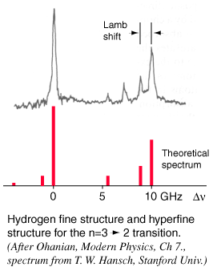
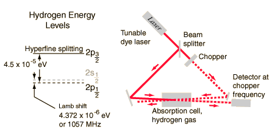

The Lamb Shift by Saturation Spectroscopy
|

|
When you try to obtain very high resolution to examine small splittings in spectral lines, such as the hydrogen fine structure and the Lamb shift, those details are obscured by the sources of line broadening. In a low pressure gas, the main source of broadening is Doppler broadening from the thermal motion of the atoms or molecules of the gas. This is particularly serious in hydrogen, since it has a low mass and therefore high thermal velocity.
Tunable dye lasers are used to excellent advantage in "Doppler-free saturation spectroscopy" to minimize the effects of the Doppler broadening. The light from the laser is split into two beams, a saturating beam and a probe beam, arranged so that they cross in a region of a gas cell containing hydrogen gas. When the laser is tuned to a the frequency of an electron transition, the saturating beam is intense enough to deplete the lower level of the transition. The saturating beam is "chopped", or modulated, so that the saturation of the transiton is turned on an off. The probe beam is then absorbed, or not, depending on the whether the saturating beam is on. The probe beam strikes a sensitive detector, locked to the modulation frequency, which can then detect a signal at that frequency corresponding to the turning on and off of the absorption of the probe beam.
|

The tremendous advantage of this technique for eliminating the effects of Doppler broadening comes from directing the saturation beam and probe beam through the gas in opposite directions. The only hydrogen atoms which are in resonance with both of the beams are those which have no component of velocity in the direction of the beams, and therefore absorb at the frequency associated with the rest frame of the atom. Other atoms in their rest frames see the incoming radiation shifted up for the saturation beam and down for probe beam or vice versa, so they are not resonant for both. The spectrum shown was obtained by tuning the dye laser slowly through the frequency range of the transition and measuring the change in intensity of the probe beam at the modulation or "chopping" frequency.
For hydrogen gas at 300 K, the rms velocity is about 2700 m/s. This speed corresponds to a Doppler shift of about 4 GHz, or a line broadening of twice that. This would effectively obscure the Lamb shift, since it is only 1.057 GHz.
|
Index
Schrodinger equation concepts
Hydrogen concepts
Reference
Ohanian
Modern Physics, Sec 7.7 |